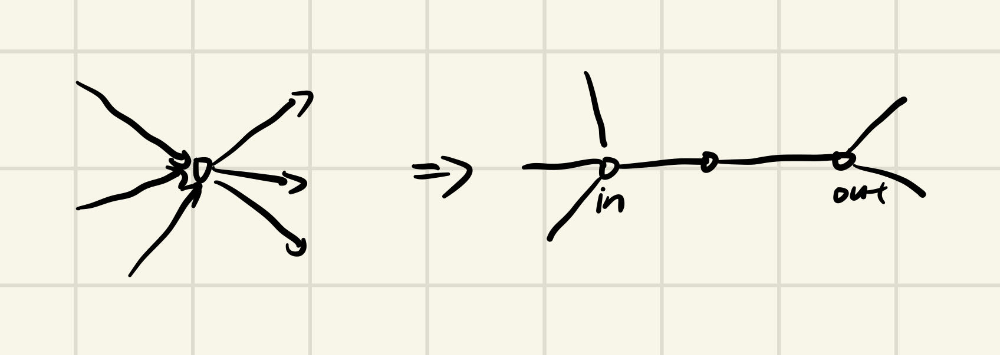

复杂度理论作业（第一次）
后续大多只简写了证明是NP-H,NP毕竟都比较显然就不写了。。。 # 1.Proof sat is npc ## 先证 sat \(\in\) np-hard:
我们的目标是证明:sat难于任何np问题。考虑任何一个np问题\(L\)，存在一个图灵机\(M\),\(x \in L \Leftrightarrow \exist u \in \{0,1\}^{p(x)} s.t.M(x,u)=1\),现在我们的目标是，将\(x\in L\)这个条件多项式地转化为一个CNF。
对于上述TM，我们可以不依赖input纸带地找到它所有的configuration(详见zaq的ppt),对于一个\(x\),我们再设定\(p(x)\)个布尔变量\(y_1,y_2....y_{p(x)}\),要判断\(M(x,\{y\})\)是否会输出1，我们只需要判断以下条件：
1. 存在一个configuration sequence satisfying
每个configuration经过转移函数后都会到达下一个configuration（TM的定义）
2. 最后一个configuration 将会使TM halt and output 1.
这可以在多项式复杂度内表示为两个CNF,因此我们成功将\(x\in L\)转化为了一个CNF。
再证 sat \(\in\) NPC
只要证sat \(\in\) NP,显然的。
2. Proof \(SAT \leq_{p} 3-SAT\)
考虑一个\(k\)元简单析取式\(A_1 \vee A_2 \vee A_3\vee... A_k\)加入一个新的变量\(z\),可以作如下化简
\(A_1 \vee A_2 \vee A_3\vee... A_k = (A_1 \vee A_2 \vee...A_{k-2} \vee z)\wedge (A_{k-1} \vee A_k \vee \bar{z})\),重复上述过程即可，可以发现重复次数显然是线性的，因此是合法的卡普规约.
3. 最大团是 NPC
我们已经证明了3-sat是NPC，因此我们只要证明 \(3-SAT \leq_{p}最大团问题\).
考虑任何一个CNF，我们建如下图：
对于m-clauses CNF,我们建立一个m部图，对于每一个从句，我们将所有成真的赋值拉出来，看成一个顶点，可以发现最多会拉出\(2^3=7\)个点，没有出现的变量用*代替。
然后，对于不矛盾的点，我们连一条边，最后只要判断最大团是否等于\(m\)即可。
4. 整数规划是NPC
考虑证明：\(SAT \leq_{p} 整数规划\)
对于任意mclauses-CNF:\((A_1 \vee A_2...)\wedge (B_1 \vee B_2 \vee...)...\) 先限制所有字母为\(0 \leq x \leq 1\),一共\(m\)个方程，再对每个析取式，写出\(\sum A_i \geq 1\)
显然，整数规划是NP的，因此得证。
5. 有向图哈密顿路是NPC
考虑将问题规约到SAT。我们换一种视角来看待SAT问题，对于每个变量\(u\),如果\(u\)取 1那么所有包含\(u\)的从句都会被满足，如果\(u\)取0那么所有包含\(\bar{u}\)的从句将会被满足。
这次，我们按照变量来建图：
对于一个变量，我们单独对它建一层点：
对于所有的从句\(c_1,c_2,c_3...c_m\),让他们相邻之间用双向边连接，规定从左往右是True,反之是False,如果取True时能让\(c_2\)满足，那么就向点\(c_2\)连边。
现在我们已经处理好了一个变量，要处理所有\(n\)个变量，我们只需要建立起点st和终点ed，按如下方式把所有变量连起来:
每一层的端点处向下一层两个端点都连边。很显然这个图如果存在哈密顿路径那么每一层走的方向就是SAT问题的答案。
6.无向图哈密顿路径是NPC
肯定是证明 \(有向图哈密顿路径 \leq_{p} 无向图哈密顿路径\).
那么给定一个有向图，我们要将它转化成一个无向图，使得哈密顿路存在性相同。对于一个节点，我们作如下转化：  将一个点拆成三个点，可以发现如果要经过中间那个点，一定是要走一个入边和一个出边.
7.哈密顿回路是NPC
考虑将它规约到无向图哈密顿路径
对于原来的无向图，直接加一个点，连接其它所有点即可。
8.TSP判定版本(是否存在小于\(k\)的路径)是NPC
考虑归约到无向图哈密顿路径。
对于一个无向图，给它每条边赋权值\(\frac{k}{n-1}\)即可
9.
证明下述语言是NPC:
\(\{(\phi,1^n): 在ZF公理系统中，命题\phi 有长度至多为n 的证明\}\)
感觉就是规约到SAT？把一个CNF看成一个math statement?
(存疑) # 10.求证二次整数01规划(模2下)是NPC
考虑从3-SAT问题归约
对于任意3-CNF，某个变量会出现\(u\)或\(\bar{u}\)的形式。我们构造二次01规划问题，对于CNF中的每个变量,构造二次约束：\(u^2+\bar{u}^2=1\),容易验证这个等式就约束了\(u,\bar{u}\)不同.
这样，我们生成了变量个数个二次约束，接下来，我们要解决每个从句的约束.
考虑到每个从句是一个简单析取式，考虑下列3种情况： 1. 从句只有一个变量\(A\),构造方程\(A^2=1\)即可 2. 从句有两个变量\(A \vee B\),构造方程\(A^2+B^2+AB=1\)即可 3. 从句有三个变量\(A \vee B \vee C\),构造新变量\(t_i\),增加方程
\(\bar{A}\cdot \bar{B}+{t_i}^2=0\)
\(t_i \cdot \bar{C}=0\)
容易验证这些方程的解会是合法的3-SAT解。
11.Exact one 3-sat
从3-sat归约，对于原来的3-sat问题，先把表达式中出现在\(j\)号从句的字母换成\(A_{i,j}\),然后再在末尾增加析取式\((\bar{A_i}\vee A_{i,j} \vee t_i)\) 同样的，还可以证明NAE-3-SAT是NPC # 12. Subsetsum(问题的规模是\(\log值域\)) 从Exact-one 3-sat归约，考虑一个exact-one 3-sat 问题，对于每个变量\(u\),如果它为真，那么将会满足某些从句，如果它为假，则会满足另一些从句，因此，对于每个变量，我们创建两个数，一个数在每个从句2倍二进制位设为1，这样可以阻止进位的发生，在从句个数+2*变量编号处也设为1（保证二择），要求的和就是\(\sum (2i)^2\)
13.点覆盖，独立集
它们和最大团完全是一个东西，略
14.Maxcut is NPC
考虑从NAE-3-SAT归约。对于给定的CNF，每个从句的每个字母都看成一个点，从句之间互相连边，形成许多二元环和三元环，考虑赋值不同的节点之间cut,这样三元环最多贡献是2，二元环是1。
但注意到同一变量在不同的从句之间的约束，因此，我们在一对相反的变量之间添加很多(比m多一个级别？比如\(m^2\))边，相当于惩罚，如果这俩点一样就少cut了这么多条边。最后把边都加上，看看是不是\(2 \cdot 三元环+重边\)